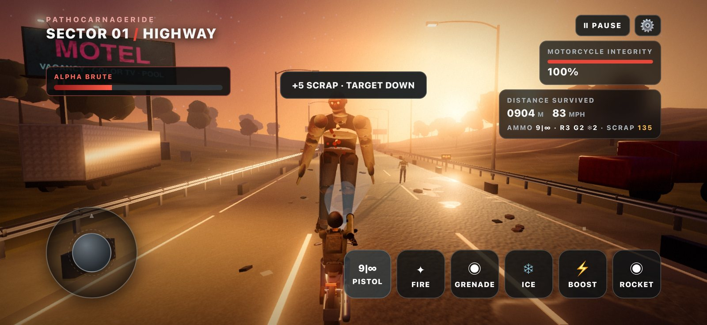
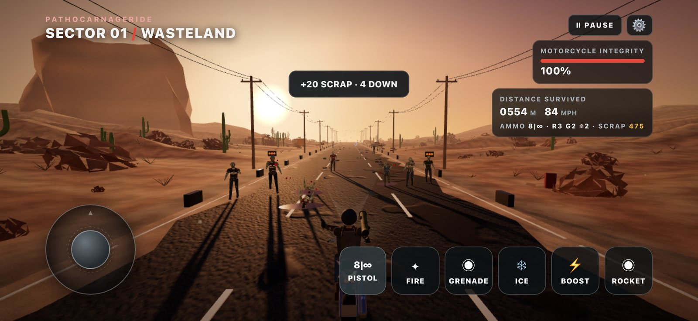
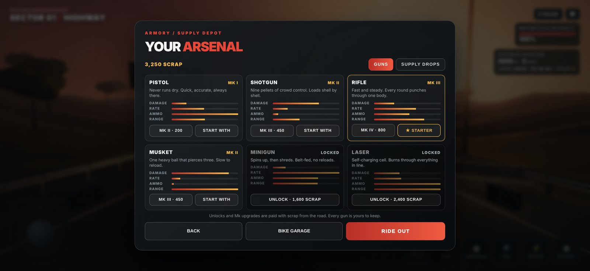

Ride the dead highway. Weave through the infected. Survive the boss.
For iPhone and iPad.



Pathocarnageride is a motorcycle survival game in 3D. Ride down a collapsed highway as the infected close in, steering around them or fighting your way through, and survive the boss waiting at the end of every sector.
Four dead places: the highway at dusk, the dark woods, the desert at sunset and the drowned night city, each with its own sky, light and weather.
Six real guns and an armory: a pistol, pump shotgun, rifle, musket, belt-fed minigun and laser, each with its own ammunition, magazine and reload. Unlock them with scrap and upgrade each one from Mk I to Mk V.
Rockets, ice bombs and slow motion: fire homing rockets from a shoulder launcher, freeze the infected solid with ice bombs, and use blue crates to slow time.
Bosses: they burst out of shop fronts, abandoned trailers, the woods and the desert sand, then charge you down.
The bike garage: spend scrap on engine, armor and handling upgrades and new paint.
Your controls: steer with a thumb stick or by tilting your device, and pick graphics from Low to Ultra.
No ads and no accounts. It plays offline. Optional in-app purchases speed things up, and everything but one paint can be earned by playing.